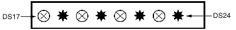
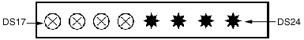
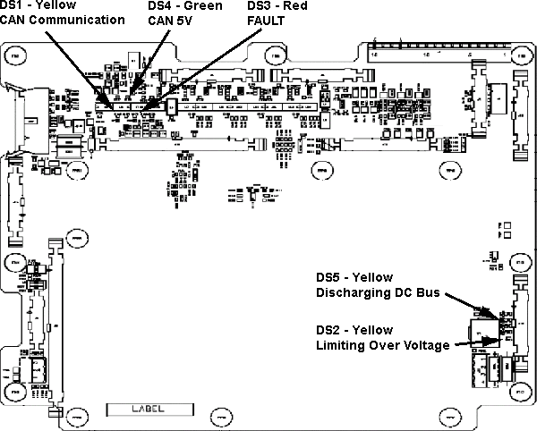
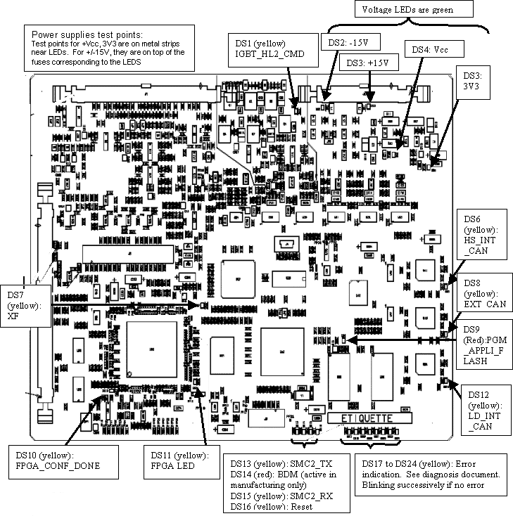
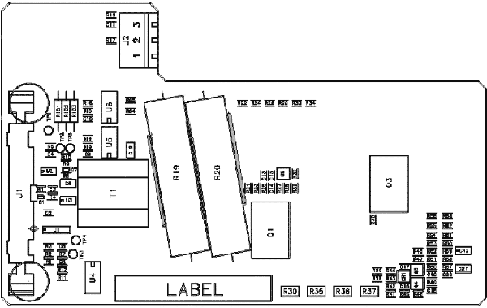
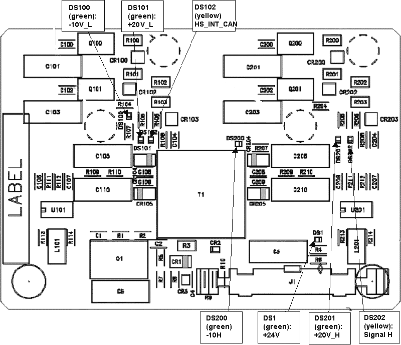
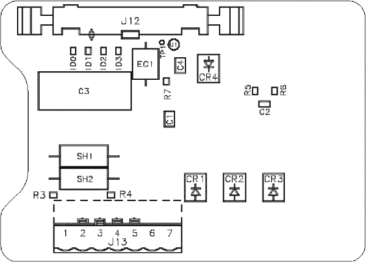
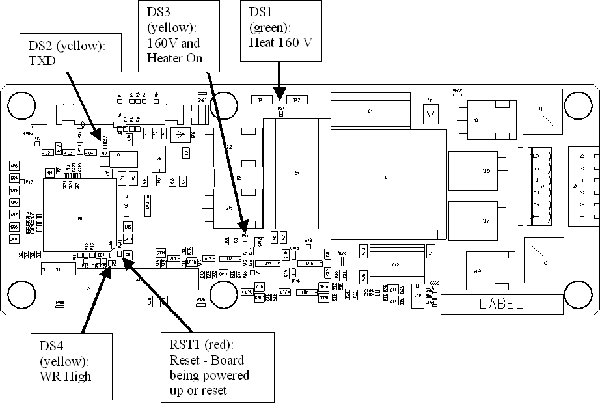
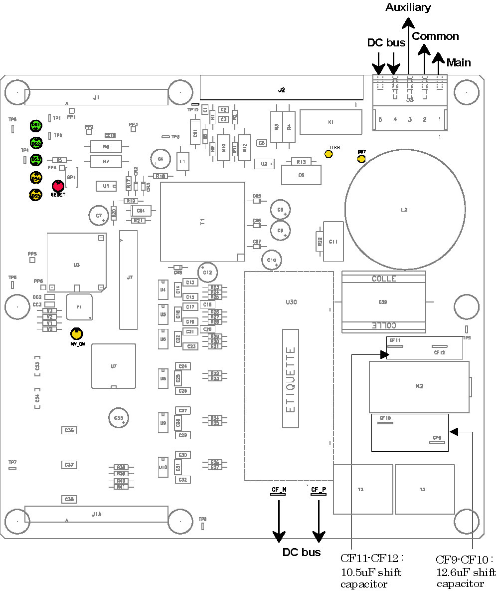
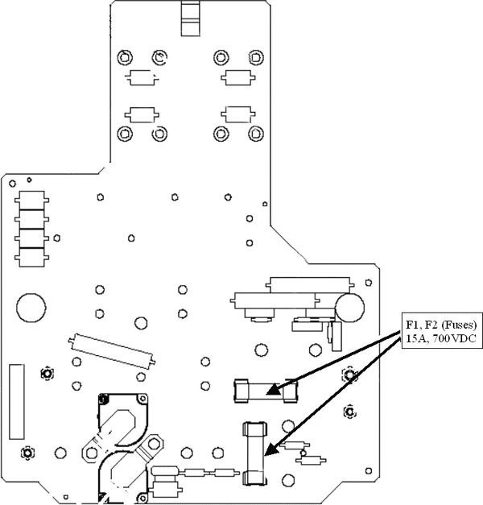

Operating Documentation
Direction 5193575-800, Rev# 5
LightSpeed 7.X Service Information - Adv
Operating Documentation |
| Last Revised: | December 2003 |
This module contains the following information:
Section 1 - Introduction
Section 2 - Power On Self Tests
Section 3 - CT IF HP V2 Board
Section 4 - PPC KV Control V2 Board
Section 5 - DC MEAS DISCH Board
Section 6 - GATE_HERCULE Board
Section 7 - KV_MEASURE HP Board
Section 8 - HEATER V6B
Section 9 - ROTATION Board
Section 10 - POWER HERCULE Board
Section 11 - LVPS400 Board
This section provides LED, switch, connector, and fuse information for the X-Ray Generation Subsystem.
All Test Points and LEDs are easily accessible and clearly labeled. Standard color coding of LEDs shall be used:
RED for hazard / fault conditions
GREEN for OK status conditions
YELLOW for other conditions
There is only one jumper used in the generator (mA tube measurement accuracy verification)
The LED display status offers useful visual feedback which can help to enable error-code based troubleshooting. Whenever in doubt, a useful first step is to look at the LED status display on the PPC kV control board, then check the LEDs on the LVPS400, Rotation, and Heater boards.
The LEDs indicating the status are the yellow LEDs, DS17 to DS24 on PPC kV control board. For the location of these LEDs, see the PPC kV Control Board block diagram in Illustration 6.
Table 1:
| INDICATOR | COLOR | INDICATES: |
| DS2 | Green | -15V Supply |
| DS3 | Green | +15V Supply |
| DS4 | Green | VCC |
| DS5 | Green | 3V3 |
| DS1 | Yellow | Gate Command Enable for IGBTS |
| DS7: XF | Yellow | ON When DSP is OK (In User Mode) |
| DS9: PGM_APPLI_FLASH | Red | ON When FLASH is Being Programmed |
| DS10: FPGA_CONF_DONE | Yellow | ON When FPGA is not in User Mode |
| DS11: FPGA_LED | Yellow | Not Used |
| DS12: LD_INT_CAN | Yellow | Not a Diagnostic LED |
| DS6: HS_INT_CAN | Yellow | Not a Diagnostic LED |
| DS8: RXD_EXT_CAN | Yellow | Not a Diagnostic LED |
| DS13: SMC2_TX | Yellow | Not a Diagnostic LED |
| DS14: BDM | Red | ON When PPC Can be Programmed |
| DS15: SMC2_RX | Yellow | Not a Diagnostic LED |
| DS16: RESET | Yellow | Board Being Reset |
| DS17 to DS24 | Yellow | Status LED in Application Mode, these LEDs Flash in Sequence Continuously. |
In the figures below,  means LED ON and,
means LED ON and,  means LED OFF.
means LED OFF.
Illustration 1: DS17 through DS24

Power On self tests: LEDs DS17 to DS24 are lit successively several times very fast.
Application mode: LEDs DS17 to DS24 are lit successively more slowly. The power up self tests are completed, PPC kV control board is up and running.
Illustration 2: DS17 through DS24

Half of the 8 LED are lit: After the download of the boot this indicates that the PPC kV control board is erasing the flash memory and preparing for the download of the application. When these tasks are done, the four LEDs on the right will be lit as shown in the following figure.
Illustration 3: DS17 through DS24

Half of the 8 LED are lit: Normal after the download of the boot. This can also indicate a corrupt software problem or database checksum problem. In case of software problem communication with the generator will not be possible. Try to download again the software or replace PPC kV CTRL board. In case of database problem, an error code is logged and communication with the generator is possible. Refer to error code description.
Illustration 4: DS17 through DS24

When an application error occurs, LEDs blink indicating the simplified error code in binary code. When the error is cleared, the 8 LEDs are lit successively.
After the power on diagnostics, heater board LEDs DS1 and DS2 are lit successively. Refer to block diagrams for complete explanation of LED indication on this board. Any different status corresponds to an abnormal situation. An error code is logged. Refer to error code description.
| NOTE: | See block diagrams. |
After the power on diagnostics, rotation board LED DS5 is blinking. Refer to block diagrams for complete explanation of LED indication on this board. Any different status corresponds to an abnormal situation. An error code is logged. Refer to error code description.
| NOTE: | See block diagrams |
After the power on diagnostics, LVPS400 board LEDs DS3 and DS4 are lit successively. Any different status corresponds to an abnormal situation. An error code is logged. Refer to error code description.
JH4 Inverter
Illustration 5: CT IF Board

Table 2: CT IF HP Board Connectors Definition
| J1 | Connection from LVPS400 |
| J2 | Connection to DAS |
| J3 | SYS_CAN_OUT |
| J5 | To Smart Tube (external connection) |
| J6 | TAV (Unused for JEDI HP) |
| J7 | Un-populated |
| J8 | Debug VT220 (to PC) |
| J9 | Temperature Control (N/A for JEDI HP) |
| J10 | To GATE_CMD_2 |
| J11 | Not Used for JEDI HP |
| J12 | To KV_CTRL |
| J13 | CAN_INT to KV_CTRL J2 and external connection for CAN |
| J14 | To GATE_CMD_1 J1 |
| J15 | Not used for JEDI HP |
| J16 | Not used for JEDI HP |
| J17 | Not used for JEDI HP |
| J18 | To DC_DISCHARGE |
| J19 | ILP,I_INV Measure - To Power IF Bobbins |
| J20 | To Tank Power Hercule J12 |
Table 3: CT IF HP V2 Board Test Points Definition
| TP1 | T3P, Lp temperature measurement |
| TP2 | T3N, Lp temperature measurement |
| TP6 | KV_N, kV measurement to DAS |
| TP8 | KV_GND, OV ref for kV measurement to DAS |
| TP5 | MA_N, mA measurement to DAS |
| TP7 | MA_GND, OV ref for mA measurement to DAS |
| TP22 | C12V, 12V supply from system |
| TP23 | C5V, 5V supply |
| TP19 & 5 | Test points for mA tool calibration |
| TP14 | 24V supply |
| TP16 | +15V supply |
| TP18 | 5V supply |
| TP20 | OV |
| TP24 | -15V supply |
| TP11 | AN_KV_P |
| TP12 | KV_GND |
| TP13 | CA_KV_N |
| TP9 | TTP, HV tank temperature measurement |
| TP10 | TTN, HV tank temperature measurement |
| TP3 | TINVP, Inverter temperature measurement |
| TP4 | TINVN, Inverter temperature measurement |
JH4 Inverter
| ELECTROCUTION HAZARD. | |
| HIGH VOLTAGE PRESENT. | |
| Do not go into generator until indicators ds2, ds3, ds4 and ds5 (LEDs - green) are no longer lit. |
Illustration 6: PPC kV Control Board

Power supplies test points:
Test points for +Vcc, 3V3 are on metal strips near LEDs.
For +/-15V, they are on top of the fuses corresponding to the LEDS
Table 4: PPC V2 Board Connectors Definition
| J1 | Gate/IGBT/ILP to CT IF J12 |
| J2 | ±15V to CT IF J13 / external connection for CAN_AUX |
| J3 | TAV/VT/RTL to CT IF |
| J4 | Not populated |
| J5 | TEST (Not used for JEDI HP) |
| J6 | BDM (Not used for JEDI HP) |
Table 5: Switches or Jumpers Functions
| SWITCH OR JUMPER | FUNCTION |
| RST | RESET PUSH BUTTON |
Table 6: Indicators
| INDICATOR | COLOR | INDICATES: |
|---|---|---|
| DS1 | Yellow | Gate command enable for IGBTs |
| DS2 | Green | -15V SUPPLY |
| DS3 | Green | +15V SUPPLY |
| DS4 | Green | VCC |
| DS5 | Green | 3V3 |
| DS6: HS_INT_CAN | Yellow | Not a diagnostic LED |
| DS7: XF | Yellow | ON when DSP is OK (in User mode) |
| DS8: RXD_EXT_CAN | Yellow | Not a diagnostic LED |
| DS9: PGM_APPLI_FLASH | Red | ON when FLASH is being programmed |
| DS10: FPGA_CONF_DONE | Yellow | ON when FPGA is not in user mode |
| DS11: FPGA_LED | Yellow | Not used |
| DS12: LD_INT_CAN | Yellow | Not a diagnostic LED |
| DS13: SMC2_TX | Yellow | Not a diagnostic LED |
| DS14: BDM | Red | On when PPC can be programmed |
| DS15: SMC3_RX | Yellow | Not a diagnostic LED |
| DS16: RESET | Yellow | Board being reset |
| Ds17 to Ds24 | Yellow | STATUS LED in application mode these LEDs flash in sequence continuously |
JH4 Inverter
| ELECTROCUTION HAZARD. | |
| HIGH VOLTAGE PRESENT. | |
| DO NOT GO INTO GENERATOR UNTIL INDICATOR DS1/DS2 (LEDS - GREEN) GOES OUT. |
Illustration 7: DC MEAS DISCH Board

| NOTE: | For a larger PDF version of the above image, click on the following
PDF icon, |
Table 7: DC MEAS DISCH Board Connectors Definition
| J1 | DC_BUS_MEAS to CT IF J18 |
| J2 | INV_TEMP |
JH4 Inverter
Illustration 8: GATE_HERCULE Board

Table 8: GATE HERCULE Connections
| J1 (from gate board 1) | IGBT CMD to CT_IF J14 |
| J1 (from gate board 2) | IGBT CMD to CT_IF J10 |
JH4 MPHVT
| This board forms part of the oil seal of the High Voltage Tank. It can only be removed at the factory. The Field Replaceable Unit (FRU) is the complete HV Tank. | |
Illustration 9: KV_MEASURE Two Tubes Board

Table 9: KV MEAS HP Board Connectors Definition
| J12 | To CT IF Board J20 |
| J13 | Pins 1-4: to fans |
| Pins 5-7: to heater board J4 (external connector on aux box) |
JH4 Auxiliaries
| ELECTROCUTION HAZARD. | |
| HIGH VOLTAGE PRESENT. | |
| Do not go into generator until indicator DS3 go out. |
Illustration 10: HEATER V6B Board

| NOTE: | For a larger PDF version of the above illustration, click on the
following PDF icon, |
Table 10: Heater V6 Board Connectors Definition
| J1 | CAN to LVPS400 J6 and Rotation board J1 |
| J2 | Filament output 1 (Angled) -unused in Jedi HP |
| J3 | Test |
| J4 | Filament output 1 (straight) to kV meas HP J12 |
JH4 Auxiliaries
| ELECTROCUTION HAZARD. | |
| HIGH VOLTAGE PRESENT. | |
| Do not go into generator until indicator DS6 and DS7 (neon-orange) go out. |
Illustration 11: Rotation Board

| NOTE: | For a larger version of the above illustration, click on the pdf icon below: |
Media File 1: Rotation Board

Table 11: ROTATION Board Connectors Definition
| J1 | CAN (not used |
| J1A | CAN to LVPS400 J6 and Heater board J1 |
| J2 | Tube interlocks |
| J3 | Pins 1-3: tube rotation |
| Pins 4-5: DC bus to Power board J1 | |
| J7 | Test |
Table 12: ROTATION Test Points Definition
| TP3 | 5V supply |
| TP4 | 5V supply GND |
| CF11, CF12 | phase shift capacitor connection |
| CF13, CF14 | phase shift capacitor connection |
| CF-P | DC bus + |
| CF_N | DC bus - |
I
Table 13: ROTATION Board Indicators
| INDICATOR | COLOR | INDICATES: |
|---|---|---|
| RESET | Red | board being reset or powered up |
| INV_ON | Yellow | the inverter is running |
| DS1 | Green | presence of +15 v supply |
| DS2 | Green | presence of -15 v supply |
| DS3 | Green | presence of +5 v supply |
| DS4-DS5 | Yellow | board status |
| DS6 | Neon (orange) | fan vac power supply present |
| DS7 | Neon (orange) | dc bus present |
JH4 Inverter
Illustration 12: POWER HERCULE Board

Table 14: Power Hercule Connectors Definition
| J1 | DC bus to Rotation board J3 |
| ELECTROCUTION HAZARD. | |
| HIGH VOLTAGE PRESENT. | |
| Do not go into generator until DS8 (neon-orange) goes out. |
| BURN HAZARD. | |
| THE RECTIFIER BRIDGE ON THIS BOARD CAN BECOME VERY HOT. | |
| Do not touch the rectifier bridge. |
Illustration 13: LVPS400 Board

| NOTE: | For a larger version of the above illustration, click on the pdf icon below: |
Media File 2: LVPS400 Board

Table 15: LVPS400 Board Connectors Definition
| J1 | 24V,15V to CT IF HP board J1 |
| J2 | 120Vac input and output to Rotation J2 |
| J3 | CAN to CT IF HP board J13 |
| J6 | CAN to Rotation J1 and Heater V6 J1 |
| J5 | Test |
| TP10 | +17V main inverter |
| TP11 | -17V main inverter |
| TP9 | +26V main inverter |
| TP13 | GND |
| TP2 | +15V supply |
| TP4 | -15V supply |